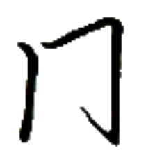
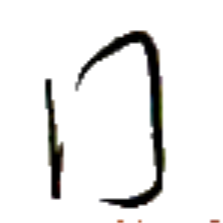
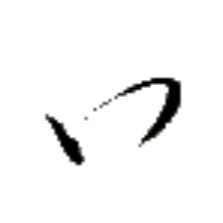
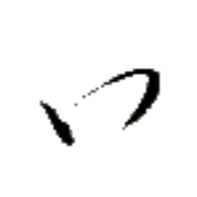
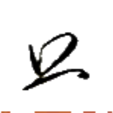
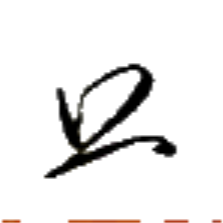
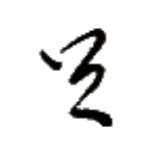
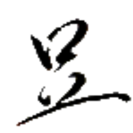
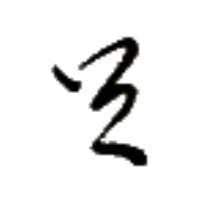
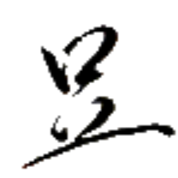

ギアウ→ 【門】
[名詞] ドア、扉
[略号] 外門集【外門集】（アイル共和国外務省）
豊門 ホウ→ギアウ→ 【豊門】
[名詞] ホーギャウ、オキヤウ（アイル共和国の都市名）
都市名としては 豊門【豊門】と表記するのが普通だが、玩具メーカー 骨門遊刀【骨門遊刀】のように、都市名においても 骨門【骨門】と表記することがある。なお、郡名の場合は基本的に 骨門【骨門】と表記する。
骨門 ホウ⤴ギアウ→ 【骨門】
[名詞] ホーギャウ、オキヤウ（アイル共和国の都市名）
都市名としては 豊門【豊門】と表記するのが普通だが、玩具メーカー 骨門遊刀【骨門遊刀】のように、都市名においても 骨門【骨門】と表記することがある。なお、郡名の場合は基本的に 骨門【骨門】と表記する。
骨門大集 ホウ⤴ギアウ→マー→ダㇳ⤴ 【骨門大集】
[名詞] 大オキヤウ郡、シェプ・オキヤウ郡（アイル共和国の郡名）
 

ミㇳ· 【橋】
[名詞] 橋
[動詞] （セッカイクの）踏越えをする
テイ→ 【叮】
[略号] (音楽)基準音の6半音上の音、(移動ドで)ファ♯・ソ♭の音
光龍卵 アイㇰ⤴ホイ⤴ウェゥㇳ· 【光龍卵】
[名詞] 光る龍の卵、読心の光龍卵
羅古論【羅古論】の説話大遠小周【大遠小周】に登場する、食べることによって人の心が読めるようになるとされる龍の卵。実在しない。
冠人 アイ⤴スㇰ⤴ 【冠人】
[名詞] アイル共和国の人
[名詞] （民族としての）アイル人
冠光 アイ⤴アイㇰ⤴ 【冠光】
[名詞] 王冠の光、統治者・統治機構の権力が世を照らす様
アイル共和国国歌の題名でもある。
圧心享蜜 ベゥㇳ⤴ヒアー→ゼゥㇷ゚·ズィㇰ⤴ 【圧心享蜜】
[四字熟語] 無理強いをして成果を出すこと
タムツイにおいては忌まれる発想だが、この成句を「締め切りがあると、やる気が出る」という肯定的な意味で捉える人もいる。
心圧 ヒアー→ベゥㇳ⤴ 【心圧】
[名詞] 心理的抑圧、心が圧されること
タムツイにおいて忌まれる。


 


 
